Temporal Autocorrelation with GLS
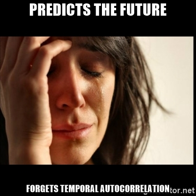
A Sample Timeseries: BIRDS!

Modeling Error Structures with Generalized Least Squares
\[Y_i = \beta X_i + \epsilon_i\] \[\epsilon_i \sim \mathcal{N}(0, \sigma^2_i)\]
Sigma as a Variance-Covariance Matrix
\[ \epsilon_i \sim N(0, \large \sigma^2)\]
if n=3…
\[ \sigma^2 = \begin{pmatrix}
\sigma^2 & 0 &0 \\
0 & \sigma^2& 0\\
0 & 0 & \sigma^2
\end{pmatrix} \]
What if varianace is not Constant?
\[ \sigma^2 = \begin{pmatrix}
\sigma^2 & 0 &0 \\
0 & \sigma^2& 0\\
0 & 0 & \sigma^2
\end{pmatrix} \]
-We weight by 1/SD of a response variable when we know something about measurement precision. - E.g. in R lm(y ~ x,weights=1/sd(y)) - Other options include modeling \(\sigma^2\) explicitly as a response. - varFixed, varIdent, etc. with gls
What if the off diagonals are not 0?
\[ \sigma^2 = \begin{pmatrix} \sigma^2 & 0 &0 \\ 0 & \sigma^2& 0\\ 0 & 0 & \sigma^2 \end{pmatrix} \]
- Temporal or Physical distance between sampling points can induce correlation between data points.
- If we have measured EVERY relevant variable, we may account for this, but not always.
Enter Time Series Analysis
Data from Zuur et al. 2009
Types of Timeseries
- Stationary - Centers on a mean value
- Mean can be determined by a set of predictors
- No temporal trend, unless due to predictors
- E.g. Population dynamics in a system at carrying capacity
- Non-Stationary
- Shows a trend
- E.g. Climate change
Stationary v. Non-Stationary
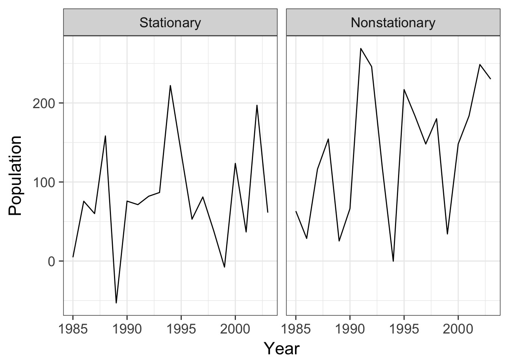
It’s Time
- Fitting a Non-Stationary Timeseries with GLS
- Other Correlation Structures
- Adding in Covariates
- Modeling with Many Timeseries
Can We Fit a Trend?
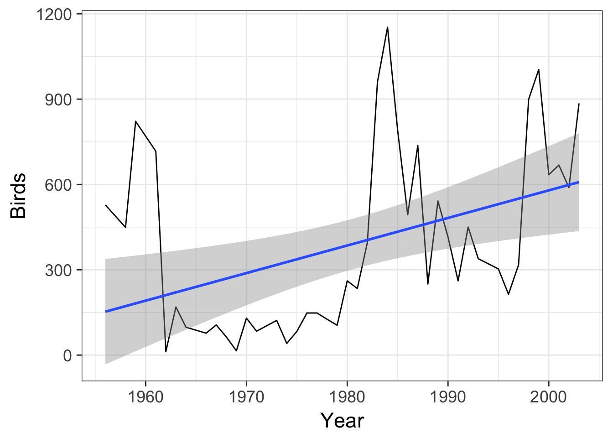
Note: Time could have had a nonlinear effect, but we’ll start simple
BUT - Need to examine cor(\(X, X_t-\tau\)) to be certain.
What could Falsely Generate a Trend?
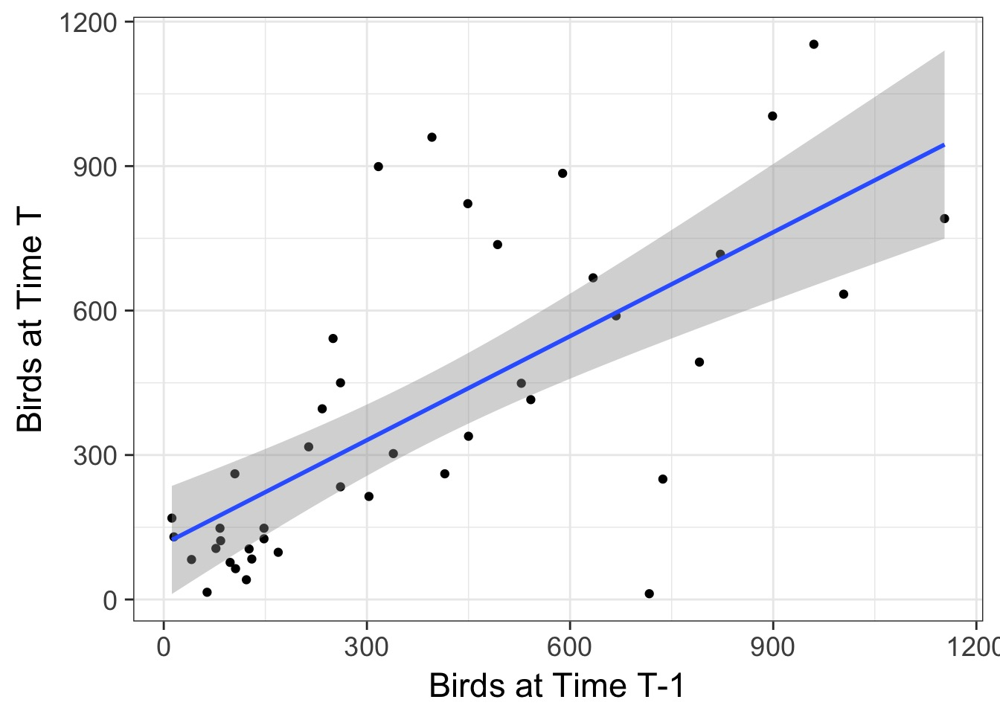
Correlation (\(\rho\)) Between T and T-1 = 0.699
What if we take out signal of previous year?
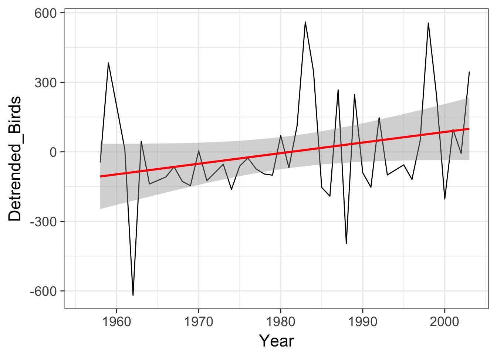
Autocorrelation of Residuals
birds_lm <- gls(Birds ~ Year, data=oahu_data)
acf(residuals(birds_lm))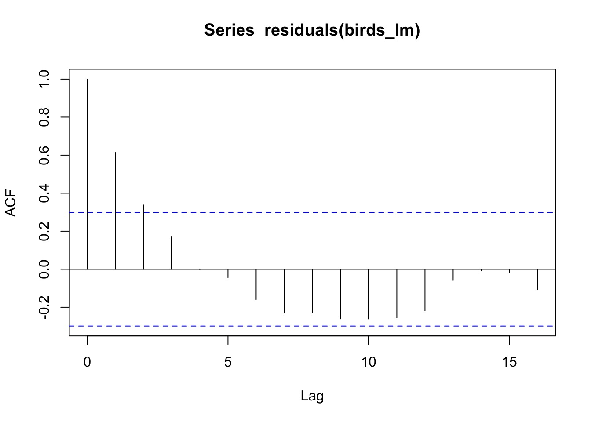
We Can Incorporate Autcorrelation into error
\[cor(\epsilon) = \begin{pmatrix} 1 & 0 &0 \\ 0 & 1& 0\\ 0 & 0 & 1 \end{pmatrix}\]\[ cor(\epsilon) = \begin{pmatrix}
1 & \rho &\rho \\
\rho & 1& \rho\\
\rho & \rho & 1
\end{pmatrix} \]
Compound Symmetric Structure: All points are equally correlated
But we see the dropoff
Autoregressive Error Structure - AR1
\[ \epsilon_{t} = \rho \epsilon_{t-1} + \zeta_{t}\]
which produces
\[ cor(\epsilon) = \begin{pmatrix}
1 & \rho &\rho^{2} \\
\rho & 1& \rho\\
\rho^{2} & \rho & 1
\end{pmatrix}\]
for n=3 time steps
- Dropoff of correlation with time
Advantages and Disadvantages with AR1 Structure
- Assumes linear dropoff of correlation
- Only a 1-year lag built in
- Need discretely timed sampling intervals
Implementing an AR1 Structure with the Oahu Time Series
#Correlation Structure
birds_corAR <- corAR1 (form = ~ Year)
#Model
birds_ar1 <- gls(Birds ~ Year, data=oahu_data,
correlation = birds_corAR)The Correlation
Generalized least squares fit by REML
Model: Birds ~ Year
Data: oahu_data
Log-restricted-likelihood: -285.7658
Coefficients:
(Intercept) Year
-14947.690329 7.763806
Correlation Structure: ARMA(1,0)
Formula: ~Year
Parameter estimate(s):
Phi1
0.7356643
Degrees of freedom: 43 total; 41 residual
Residual standard error: 332.2233 Does AR1 Fit Better?
Model df AIC BIC logLik Test L.Ratio p-value
birds_ar1 1 4 579.5315 586.3858 -285.7658
birds_lm 2 3 599.5628 604.7035 -296.7814 1 vs 2 22.03122 <.0001But no longer a linear trend
Without correction
| Value | Std.Error | t-value | p-value | |
|---|---|---|---|---|
| (Intercept) | -18806.203 | 6472.241 | -2.906 | 0.006 |
| Year | 9.693 | 3.268 | 2.966 | 0.005 |
With correction
| Value | Std.Error | t-value | p-value | |
|---|---|---|---|---|
| (Intercept) | -14947.690 | 14943.052 | -1.000 | 0.323 |
| Year | 7.764 | 7.549 | 1.029 | 0.310 |
Trends Look similar…
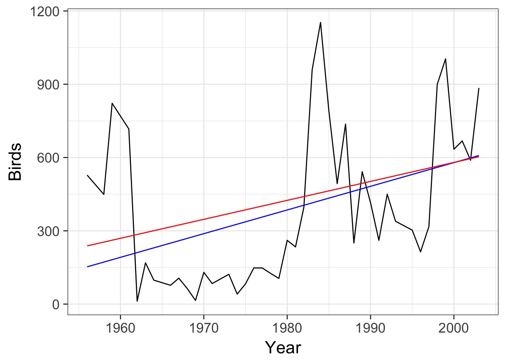
But Big CI increase
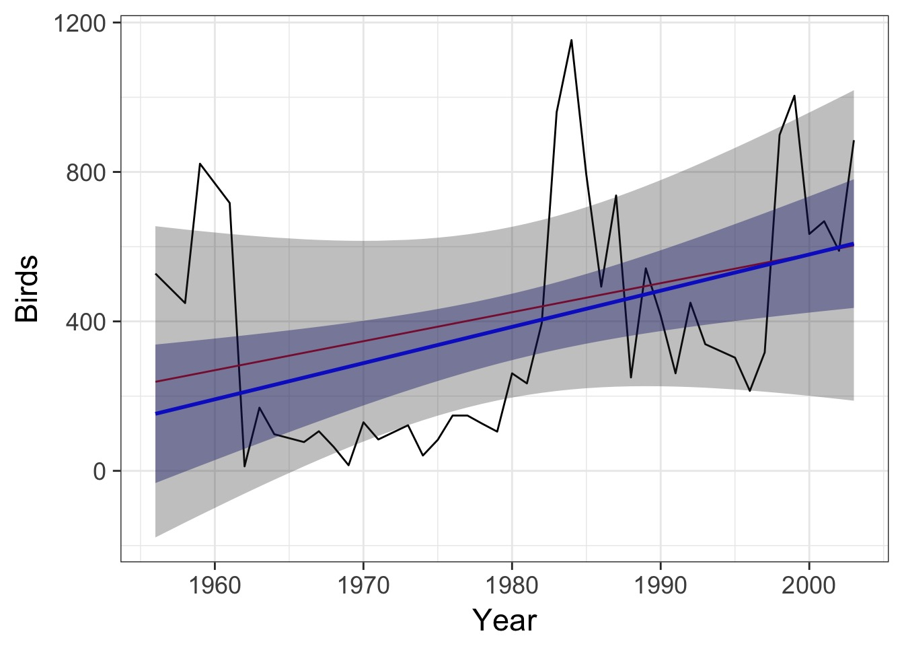
It’s Time
- Fitting a Non-Stationary Timeseries with GLS
- Other Correlation Structures
- Adding in Covariates
- Modeling with Many Timeseries
Other Correlation Structures
- Continuous Autoregressive Process
- Uses continuous time
- Easier on data sets with Gaps
- Uses continuous time
- Autoregressive Moving Average
- Variable autoregressive order (AR1 = 1)
- Incorporate moving average over time
- Variable autoregressive order (AR1 = 1)
CAR Structure
birds_corCAR <- corCAR1(form = ~ Year)- Take continuous covariate
corAR1assumes 1 step between each value of covariate
- Allows for things like missing time points, etc.
- In our example, produces identical results
Autoregressive Moving Average Structure
- Two parts:
- \(\epsilon_{t} = \phi_1 \epsilon_{t-1} + \phi_2 \epsilon_{t-2} + ... + \zeta_{t}\)
- You can have a lag effect from more than 1 year
- \(\epsilon_{t} = \theta_1 \zeta_{t-1} + \theta_2 \zeta_{t-2} + ... + \zeta_{t}\)
- Deviation from 0 residual mean due to lagged effects
- Remember, these parameters all have to be estimated!
ARMA Structure
Two Year AR Correlation
arma_birds_2_ar <- corARMA(form = ~ Year, p = 2, q=0)Two Year MA
arma_birds_2_ma <- corARMA(form = ~ Year, p = 0, q=2)Two Year ARMA
arma_birds_2_arma <- corARMA(form = ~ Year, p = 2, q=2)Compare Fits
Model df AIC BIC logLik Test L.Ratio p-value
birds_ar2 1 5 581.3772 589.9451 -285.6886
birds_arma2 2 7 585.3404 597.3354 -285.6702 1 vs 2 0.03681297 0.9818 Model df AIC BIC logLik Test L.Ratio p-value
birds_ma2 1 5 584.6792 593.2470 -287.3396
birds_arma2 2 7 585.3404 597.3354 -285.6702 1 vs 2 3.338772 0.1884 Model df AIC BIC logLik
birds_ma2 1 5 584.6792 593.2470 -287.3396
birds_ar2 2 5 581.3772 589.9451 -285.6886What about AR1 v. AR2?
anova(birds_ar1, birds_ar2) Model df AIC BIC logLik Test L.Ratio p-value
birds_ar1 1 4 579.5315 586.3858 -285.7658
birds_ar2 2 5 581.3772 589.9451 -285.6886 1 vs 2 0.1543411 0.6944How do I know if my lag is >1 time step
- Autocorrelaiton plots show total correlation between a Y(t) and Y(t-s)
- If we control for correlation at each timestep, we can get unique lag of s - Partial Autocorrelation
PACF Plot
pacf(residuals(birds_lm))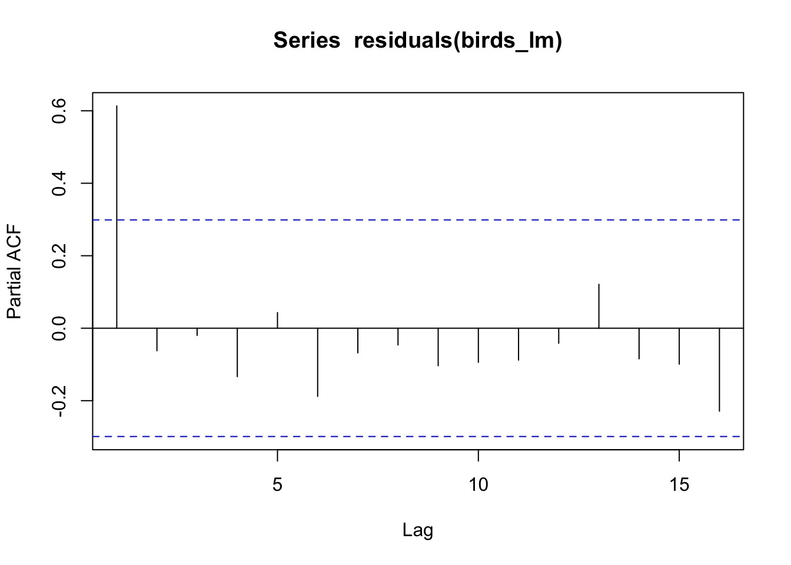
Differentiating Between AR and MA processes
- If ACF function shows long decay, and PACF shows a drop to 0 quickly, mostly an AR process
- E.g., ACF doesn’t drop to 0 until 10 years, but PACF drops to 0 after 2, AR3 Process
- If ACF function drops off quickly, but PACF shows a long decay, mostly an MA process
It’s Time
- Fitting a Non-Stationary Timeseries with GLS
- Other Correlation Structures
- Adding in Covariates
- Modeling with Many Timeseries
Adding Predictors
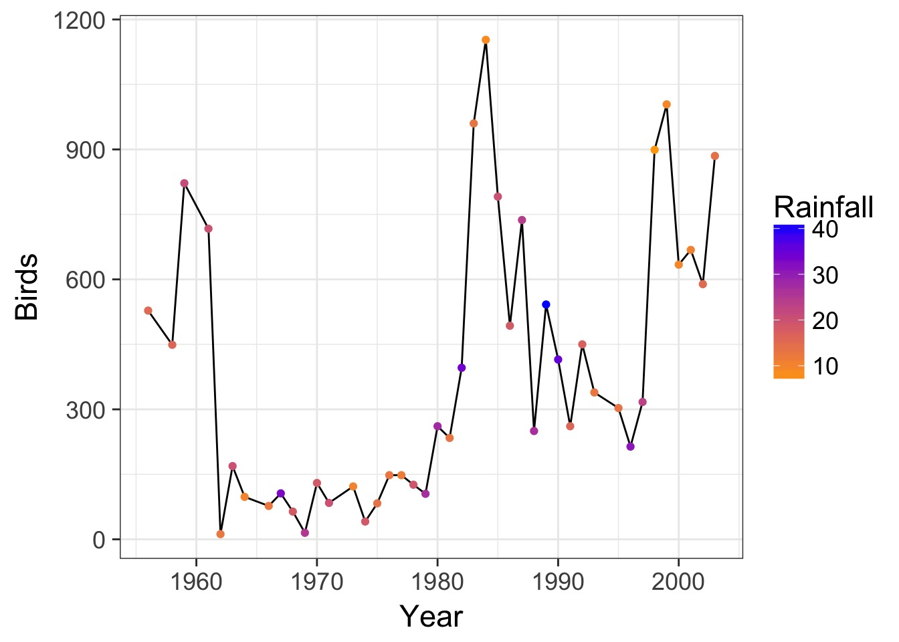
Why Might Predictors Change Autocorrelation Problems?
- Often, correlation is caused by drivers correlated in space and time
- For example, El Niño is followed by La Niña, leading to correlations between years in rainfall
- BUT - if we model ENSO, this correlation might go away
Did rainfall do the trick?
birds_rain <- gls(Birds ~ Rainfall+Year, data=oahu_data)
acf(residuals(birds_rain))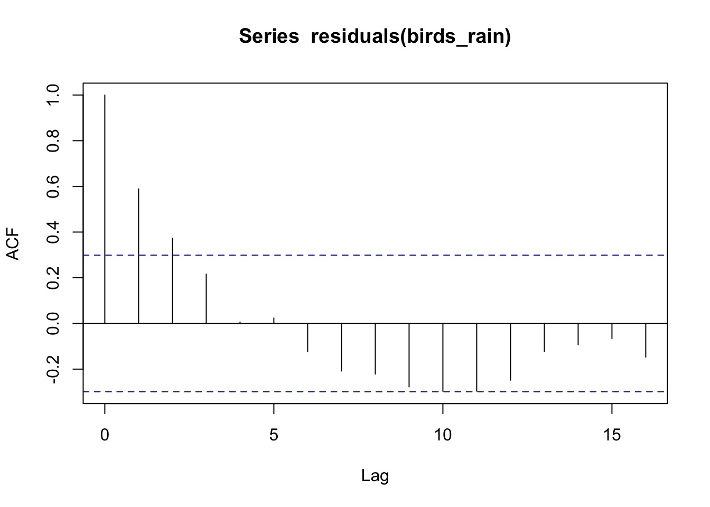
Still autocorrleation
Our Autocorrelation Structure Still Holds
birds_rain_ar <- gls(Birds ~ Rainfall+Year,
data=oahu_data,
correlation = birds_corAR)Autocorrelation Reduces Sums of Squares
No Correlation
Denom. DF: 40
numDF F-value p-value
(Intercept) 1 8.132235 0.0068
Rainfall 1 1.813967 0.1856
Year 1 8.623939 0.0055Correlation
Denom. DF: 40
numDF F-value p-value
(Intercept) 1 1.0344877 0.3152
Rainfall 1 0.4183154 0.5215
Year 1 1.1009574 0.3004It’s Time
- Fitting a Non-Stationary Timeseries with GLS
- Other Correlation Structures
- Adding in Covariates
- Modeling with Many Timeseries
Adding Groups

Adding Groups with Rain
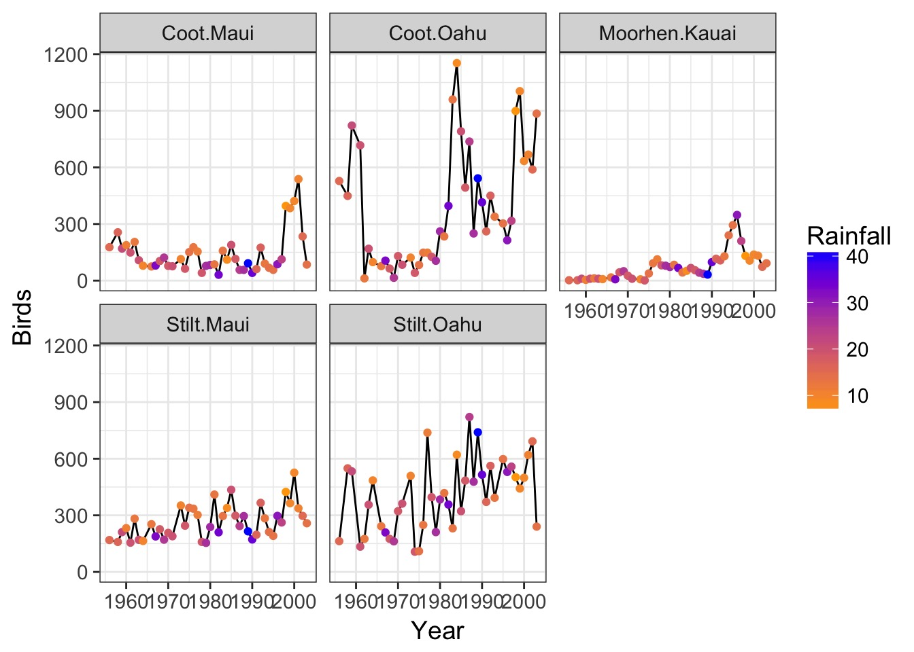
Variable Relationship?
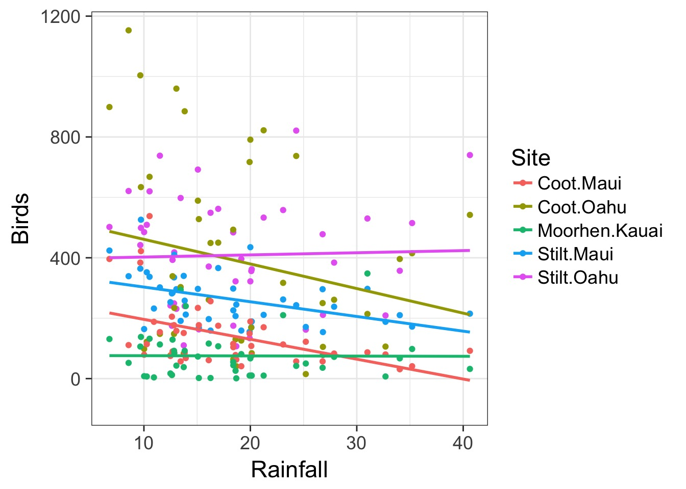
Overall Temporal Trend?
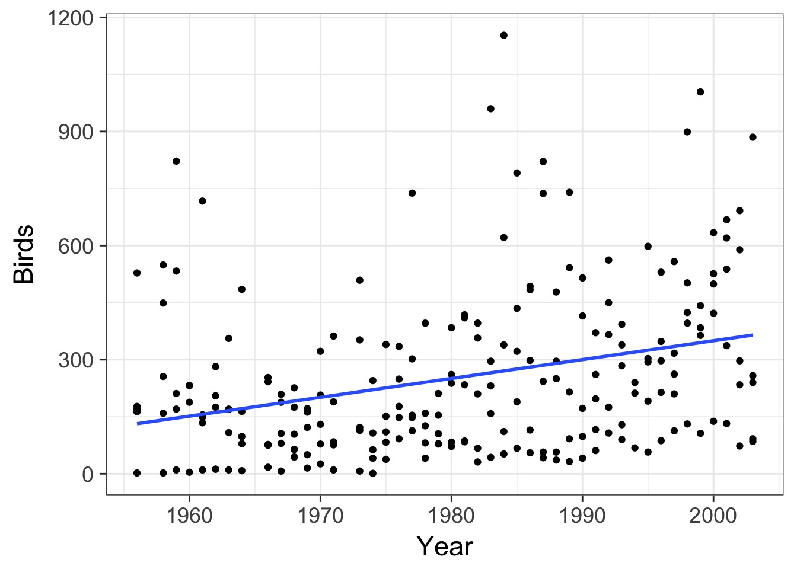
Accomodating Between Site Heterogeneity
Each site needs it’s own \(\sigma^2\)
Variance By Group
birds_var <- varIdent(form = ~ 1 | Site)No Autocorrelation GLS
all_rain <- gls(Birds ~ Rainfall*Site + Year,
data=allbirds,
weights = birds_var)But…
acf(residuals(all_rain))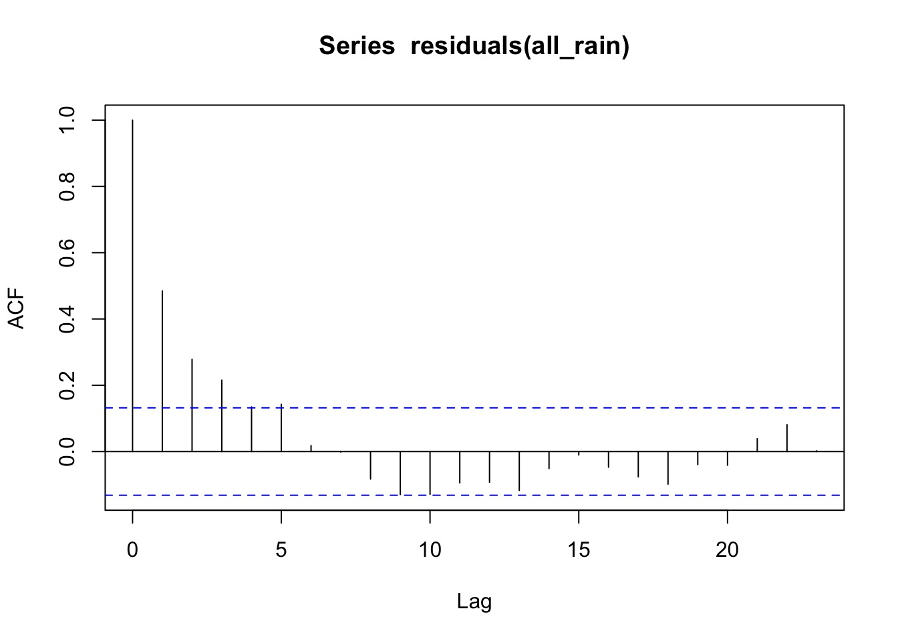
Fortunately, still AR1
pacf(residuals(all_rain))
AR1 With Groups
- Correlation Could Vary By Site
- We use
|to denote ‘varies by’
birds_corAR_site <- corAR1(form = ~ Year | Site)Build the Model
all_rain_cor <- gls(Birds ~ Rainfall*Site + Year,
data=allbirds,
weights = birds_var,
correlation = birds_corAR_site)Evaluate
| Df | Chisq | Pr(>Chisq) | |
|---|---|---|---|
| Rainfall | 1 | 4.249472 | 0.0392625 |
| Site | 4 | 75.580590 | 0.0000000 |
| Year | 1 | 19.326067 | 0.0000110 |
| Rainfall:Site | 4 | 12.404620 | 0.0145829 |
Did we need the autocorrelation?
Model df AIC BIC logLik Test L.Ratio p-value
all_rain 1 16 2676.617 2730.171 -1322.308
all_rain_cor 2 17 2613.632 2670.533 -1289.816 1 vs 2 64.9849 <.0001Show us Fit
allbirds$fit <- predict(all_rain_cor)
allSites +
geom_line(data=allbirds,
mapping=aes(y=fit),
color="red")Show us Fit
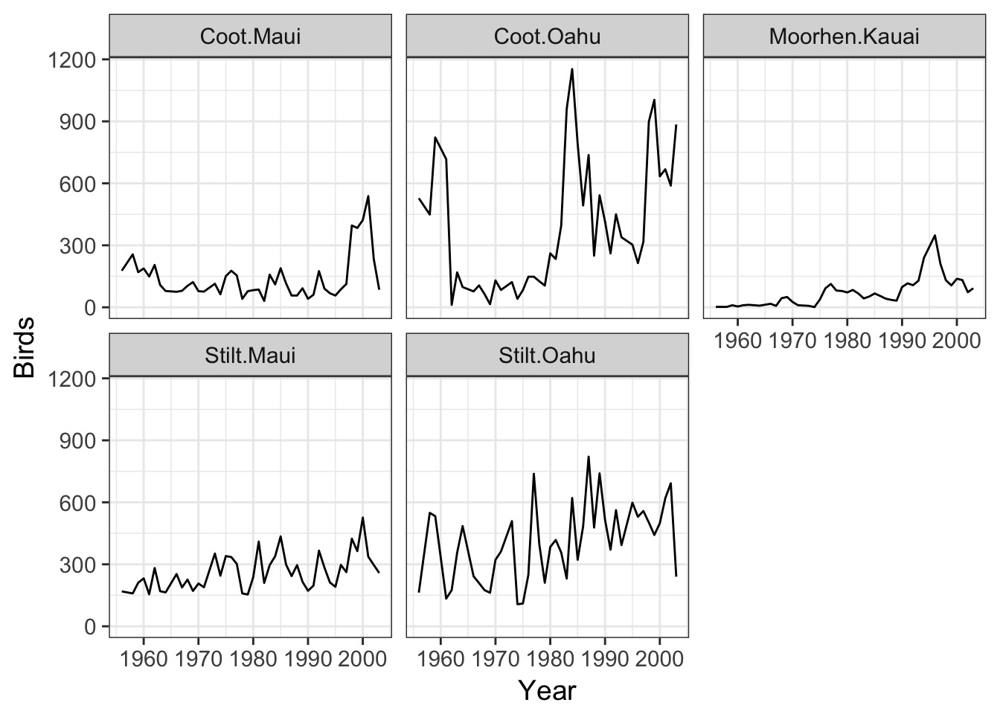
Show us Fit
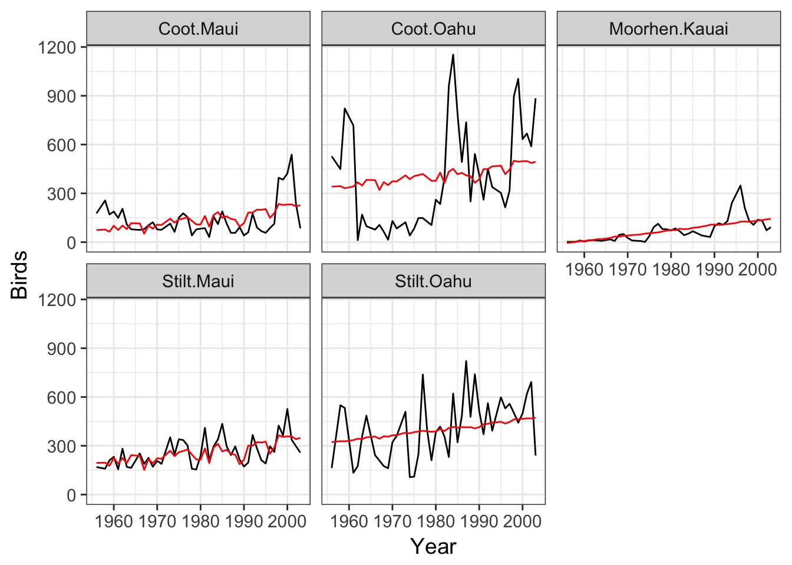
\(R^2\) = 1- RSS/TSS = 0
Exercise: Model CHLFa in the Plankton Data Set

How well can you model the time series with the measurements at hand?
Data extrapolated from Zuur et al. 2009
## Exercise: Model CHLFa in the Plankton Data Set Suggested Order:
- Select one site, evaluate trend with and without correlaiton
- Include >2 predictors
- Add back in all of the sites
- Plot predicted timeseries